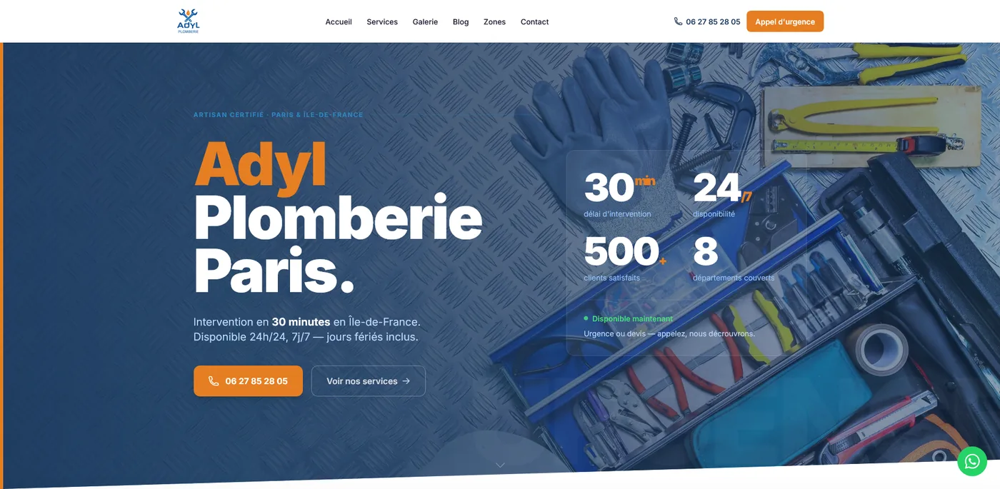
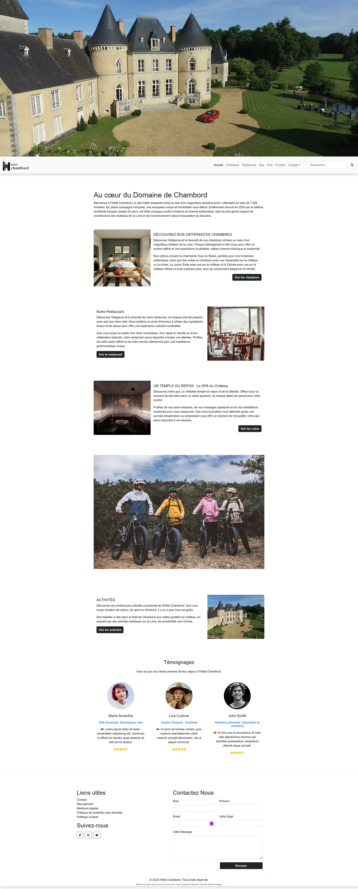
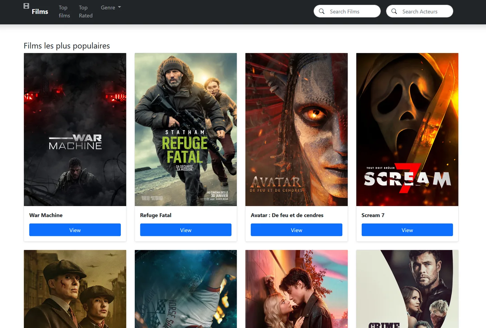
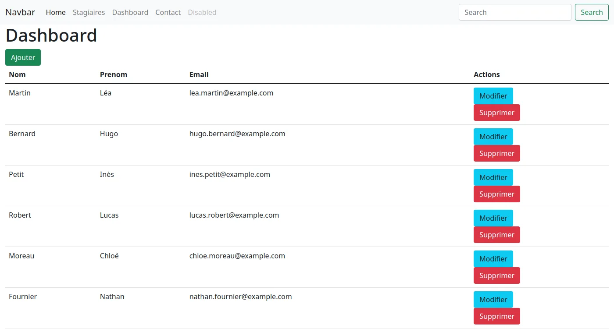
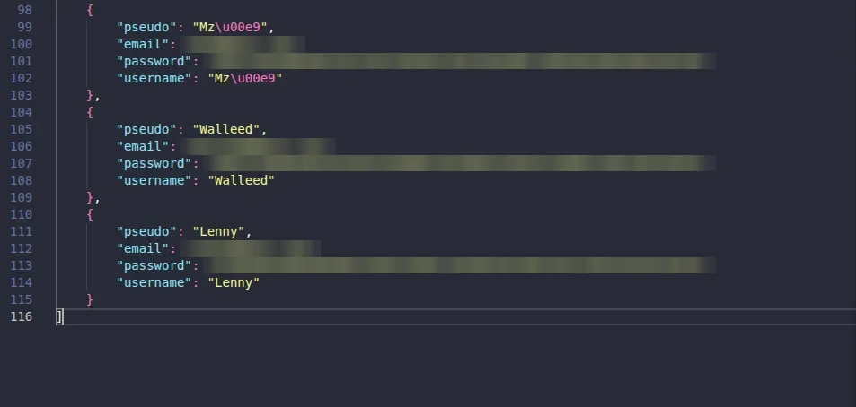
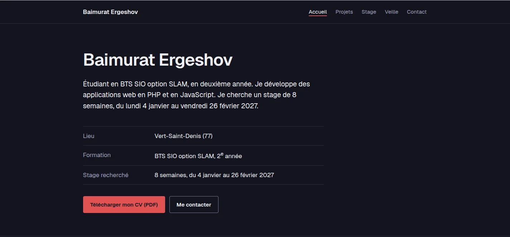

Baimurat Ergeshov
Étudiant en BTS SIO option SLAM, en deuxième année. Je développe des applications web en PHP et en JavaScript. Je cherche un stage de 8 semaines, du lundi 4 janvier au vendredi 26 février 2027.
- Lieu
- Vert-Saint-Denis (77)
- Formation
- BTS SIO option SLAM, 2e année
- Stage recherché
- 8 semaines, du 4 janvier au 26 février 2027
À propos
J'ai commencé à coder en 2020, sur le PC familial, en suivant des tutoriels YouTube pour faire des sites web.
Vers 2021-2022, je me suis mis à Node.js. J'ai fait des bots Discord et des scripts pour automatiser des actions de mon quotidien. J'ai toujours aimé automatiser ce qui se répète.
Ensuite, j'ai moins codé, parce que j'avais d'autres projets. Je continuais quand même à écrire de petits programmes de temps en temps. Je m'y suis remis sérieusement en septembre 2025, au début du BTS : des sites de test, mes projets de cours, un serveur chez moi, puis le stage chez Adyl Plombier.
Je cherche un stage où mon travail sera relu et corrigé, sur des sujets que je ne maîtrise pas encore.
Compétences
Pour chaque compétence, les projets où je l'ai utilisée.
- PHP
- Adyl Plombier, Hôtel Chambord, MovieDB, Gestion des stagiaires, Passerelle Python / PHP
- Architecture MVC
- Adyl Plombier, Gestion des stagiaires
- MySQL et SQL
- Adyl Plombier, Hôtel Chambord, Gestion des stagiaires, Passerelle Python / PHP
- JavaScript
- Adyl Plombier, Hôtel Chambord, ce portfolio
- API REST et JSON
- MovieDB, Passerelle Python / PHP
- HTML, CSS, Bootstrap, Tailwind
- Tous les projets web
- Sécurité applicative
- Adyl Plombier
- Référencement
- Adyl Plombier
- Linux (Ubuntu)
- Serveur maison
- Python
- Passerelle Python / PHP
- Git, Figma, Photoshop
- Hôtel Chambord (Git en équipe), Adyl Plombier (maquettes)
Projets
Cliquez sur un projet pour ouvrir sa fiche, avec les captures et les détails.
-

Site public et espace d'administration pour un plombier d'urgence, en MVC sans framework. Fait pendant mon stage de 1re année.
-

Deux projets autour d'un hôtel fictif : une application de gestion des salariés (CRUD), faite seul, et le site de l'hôtel, fait en groupe, avec chambres, restaurant, spa, réservation, recrutement et espace d'administration.
-

Catalogue de films et de séries alimenté par l'API TMDb : populaires, mieux notés, navigation par genre, fiches détaillées.
-

Suivi de stagiaires, de matières et d'évaluations. À partir du code fourni par le professeur, j'ai ajouté le tableau de bord d'administration.
-

Une application PHP enregistre des utilisateurs en JSON et en MySQL, et un script Python relit le fichier JSON.
-
Le PC du lycée reçu en seconde, dont l'écran est cassé, transformé en serveur Jellyfin accessible à distance par Tailscale.
-

Le site que vous consultez. Il me sert aussi de terrain d'application pour ma veille sur l'accessibilité numérique.
Contact
Je cherche un stage de 8 semaines, du lundi 4 janvier au vendredi 26 février 2027. Vous pouvez m'écrire pour une proposition ou pour une question sur un de ces projets.
- GitHub
- github.com/baimuratergeshov
- Baimurat Ergeshov
- CV
- CV_Baimurat_Ergeshov.pdf (PDF)